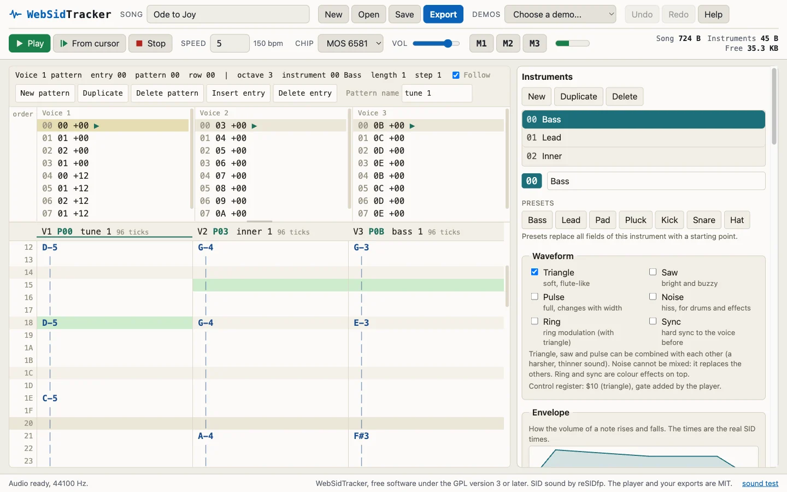
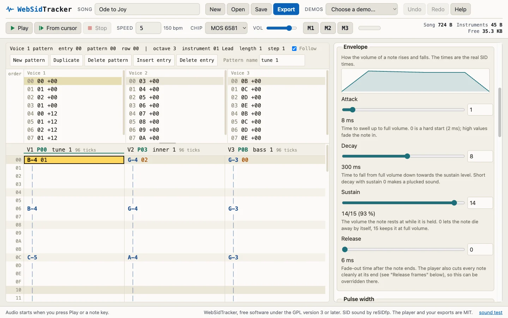

Write Commodore 64 music in your browser.
WebSidTracker is a tracker for the SID sound chip. It comes with a small original 6502 music player that you can drop into your own game. The tracker runs that very same player, so what you hear is what the exported files do on a real C64.
Open the tracker Read the manual Source on GitHub
Free. No account, no server, works offline once loaded. Sound starts at your first click or key press.

What it is
The sound of the classic C64 game composers comes from playing the SID chip every frame: the pulse width sweeps while a note sounds, vibrato starts late like a hand on a string, one voice runs through a chord, a drum is a puff of noise followed by a falling tone. A tiny player and a few hundred bytes of data do all of that.
This project has two parts. The player is about 1.5 KB of 6502 assembly, written to be read in an afternoon. The tracker is a web page where you write songs for it. The page contains a 6502 core in JavaScript and the reSIDfp chip emulation, and it runs the real player code on them. Nothing is imitated: if it sounds right in the tracker, the same bytes sound right on the machine.
Who it is for
- Makers of C64 games and demos who want music without a big player in the way.
- Chiptune fans who want to write for the SID chip without installing anything.
- People learning 6502 assembly. The player source is commented line by line, and you can watch it work while you edit.
How it works
Your song is plain data. The player reads it and writes SID registers once per frame, exactly as it does on a C64. Those writes go to a chip emulation, and the result goes to your speakers.
- The song is turned into bytes in the player's own format: an order list per voice, patterns, an instrument table.
- The real player runs on a 6502 core written in JavaScript, once per 50 Hz frame, and writes to the SID registers like on the C64.
- The writes drive reSIDfp, a cycle-exact SID emulation compiled to WebAssembly, and an AudioWorklet plays what comes out.
Features
- Live editing
- Change notes, patterns and instruments while the song plays. The new data goes into the running player between two frames.
- Three voices
- One order list per voice, patterns shared between voices, transposition per order entry, mute per voice.
- Instruments
- Waveforms, ADSR with the real SID times, a pulse width sweep, vibrato that starts late, an arpeggio, and drums on any voice.
- Patterns and order lists
- A grid with one row per tick, a keyboard layout like other trackers, undo and redo for every edit.
- Six demo songs
- Open one, press play, and change things to see what each field does.
- Exports
music.asm(the player),instruments.asmandsong_name.asmas ACME source, and a ready-to-run.prg.- Projects as JSON
- Save and open your work as a file. The tracker also keeps an autosave in the browser.
- Runs in the browser
- No server, no account. Once loaded it works offline. Chip model 6581 or 8580.

Demo songs
Six songs ship with the tracker. Five are arrangements of public-domain pieces, rebuilt from printed scores, and one is an original tune. The link opens the song in the tracker; press Play there.
-
Ode to Joy
Beethoven
The theme from the Ninth Symphony: a bright lead, inner parts as harmony, a triangle bass.
Play in the tracker : Ode to Joy -
Für Elise
Beethoven
The whole bagatelle in three voices, inner voices as arpeggio chords, every repeat written out.
Play in the tracker : Für Elise -
Rondo alla Turca
Mozart
The whole third movement of the sonata K. 331, repeats included, with the left-hand chords as arpeggios.
Play in the tracker : Rondo alla Turca -
Toccata in D minor
Bach (attributed)
The organ piece bar for bar, from the famous opening to the closing recitative. Pulse organ and a pedal bass.
Play in the tracker : Toccata in D minor -
In the Hall of the Mountain King
Grieg
The creeping march that starts quiet and staccato and climbs to the loud finale.
Play in the tracker : In the Hall of the Mountain King -
Original demo tune
WebSidTracker
A 16-bar tune in A minor with bass, lead and drums, built from a few small patterns that are reused with transposition.
Play in the tracker : Original demo tune
Using it in your game
Export music.asm, instruments.asm and your song file, include them in your ACME project, and make two calls. music_init takes the address of the song in A (low byte) and X (high byte). music_play goes in your raster interrupt, once per frame.
lda #<my_song ; address of the song header
ldx #>my_song
jsr music_init ; starts the song (volume is set to 15)
...
irq jsr music_play ; once per frame, from the raster interrupt
...
jsr music_stop ; silence, st_running = 0The player needs 14 bytes of zero page and about 1.5 KB. It has no song table: pick a song by its label. How it behaves in every case, the memory map and the measured run time per frame are in docs/player.md.
Status and limits
It works end to end, and it is still being tuned by ear. Things it does not do yet:
- PAL only. NTSC needs another frequency table and 60 Hz timing.
- One fixed speed per song. You cannot change the speed inside a song.
- No filter yet.
- No sound effects that borrow a voice yet.
- The pattern editor has no mouse selection or copy and paste; the mouse only places the cursor.
- The default instruments and the demo songs are still being fine-tuned by ear.
Licences and credits
The licence is split by what you use in your game.
- The player and everything the tracker exports (
music.asm,instruments.asm, the song files, the.prg) are MIT. Your game can have any licence you like. A line in your credits is enough, for example: Music player by Dennis Decoene (WebSidTracker, MIT licence). - The web app is GPL-3.0-or-later, because it contains reSIDfp. That concerns the tracker itself, not your game and not the files you export from it.
Clean room. The player is an original design. It does not contain code, data, labels or byte formats from any other player or tracker, and it is not compatible with their formats on purpose.
Sound. The SID emulation is libresidfp (reSIDfp) by Dag Lem, Antti S. Lankila, Ken Händel and Leandro Nini, GPL.
Music. The demo songs are arrangements of public-domain compositions. The notes were read from public-domain editions of the scores, typeset for the Mutopia Project. The tune labelled original is original.